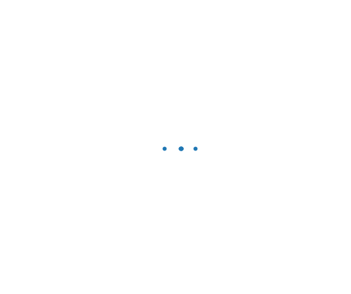
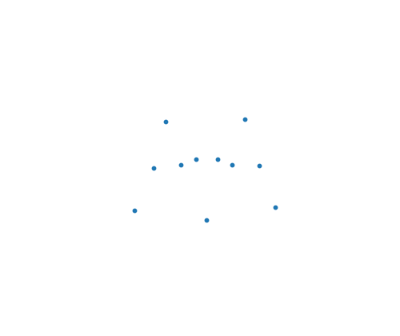
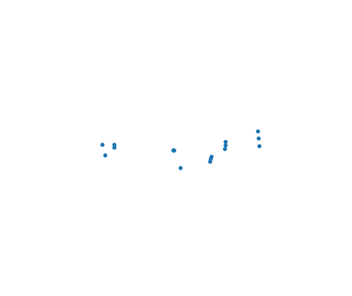
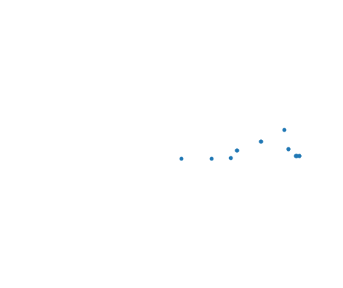

Implementation
URDF <mimic>, USD NewtonMimicAPI, and
USD PhysxMimicJointAPI now import as joint metadata. The old
mimic_constraints_as_joints flag remains only for source compatibility;
passing false does not restore separate mimic-constraint storage.
FK and IK consume the follower inline. MuJoCo lowers each Newton MIMIC joint
to the synthetic scalar coordinate and mjEQ_JOINT row that MuJoCo
needs internally; that lowering is not a second Newton model representation.
Branch vs Main
Each checkout ran the same benchmark harness with 20 samples and 3 repeats on
cuda:0. Raw data:
branch JSON,
main JSON, and
minimal example JSON.
| Asset | Branch coords / DOFs | Main coords / DOFs | Branch mimic joints / constraints | Main mimic joints / constraints | Branch FK mean | Main FK mean |
|---|---|---|---|---|---|---|
| Synthetic Robotiq URDF | 1 / 1 | 6 / 6 | 5 / 0 | 0 / 5 | 352.2 us | 544.4 us |
| Robotiq 2F85 USD | 6 / 6 | 14 / 12 | 0 / 0 | 0 / 1 | 343.9 us | 698.6 us |
| Robotiq 2F85 MJCF | 6 / 6 | 14 / 12 | 0 / 0 | 0 / 1 | 351.0 us | 483.0 us |
| LEAP hand MJCF | 16 / 16 | 16 / 16 | 0 / 0 | 0 / 0 | 408.5 us | 320.2 us |
| Shadow hand MJCF | 24 / 24 | 24 / 24 | 0 / 0 | 0 / 0 | 401.2 us | 331.0 us |
| Unitree G1 with hands URDF | 43 / 43 | 43 / 43 | 0 / 0 | 0 / 0 | 420.8 us | 400.1 us |
The mimic-heavy Robotiq cases are the meaningful delta: the branch removes follower coordinates and separate mimic-constraint rows from importer output. The other assets are controls and show no coordinate-count change.
Real-Asset Captures




Solver Direction
XPBD, Featherstone, Semi-Implicit, and VBD should add dependent-coordinate
force handling for JointType.MIMIC when they support dynamic mimics.
They should not preserve or reintroduce an importer-facing mimic-constraint
path for URDF/USD mimic metadata.
Verdict: mimics are joints. Importers attach mimic metadata to joints, FK/IK
consume it directly, and solvers either consume JointType.MIMIC
natively or lower it privately.